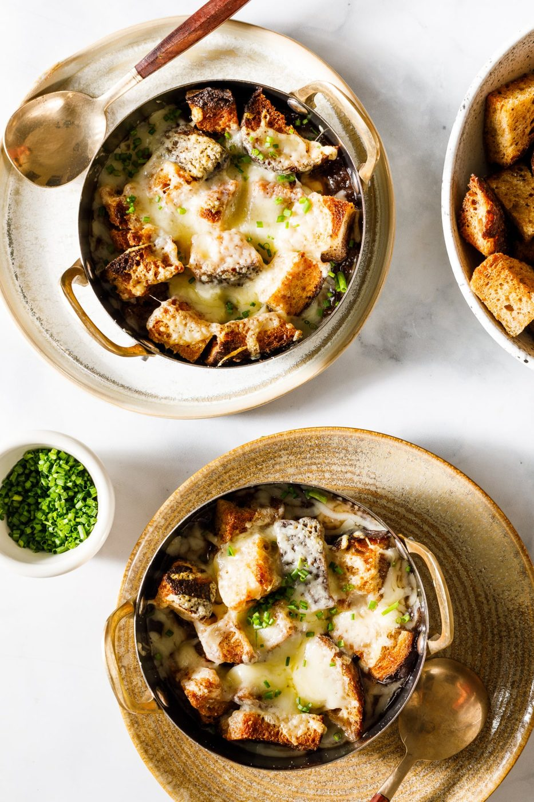
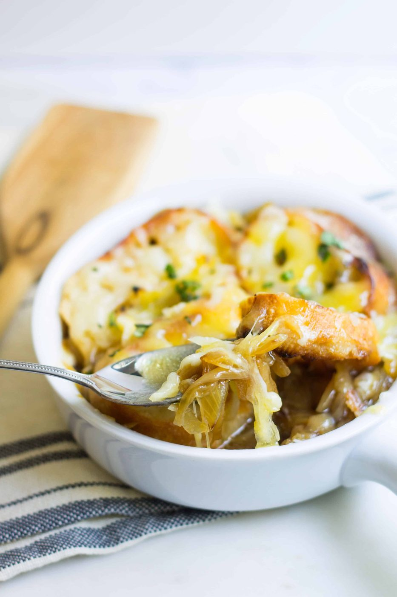
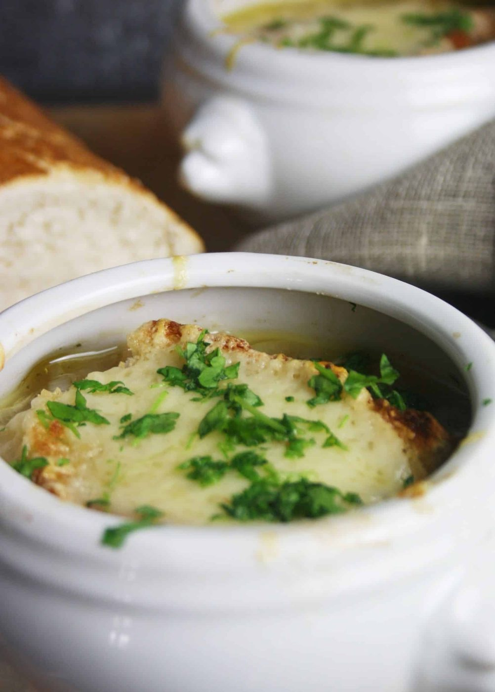
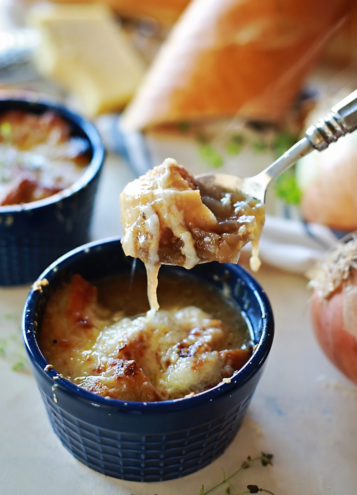
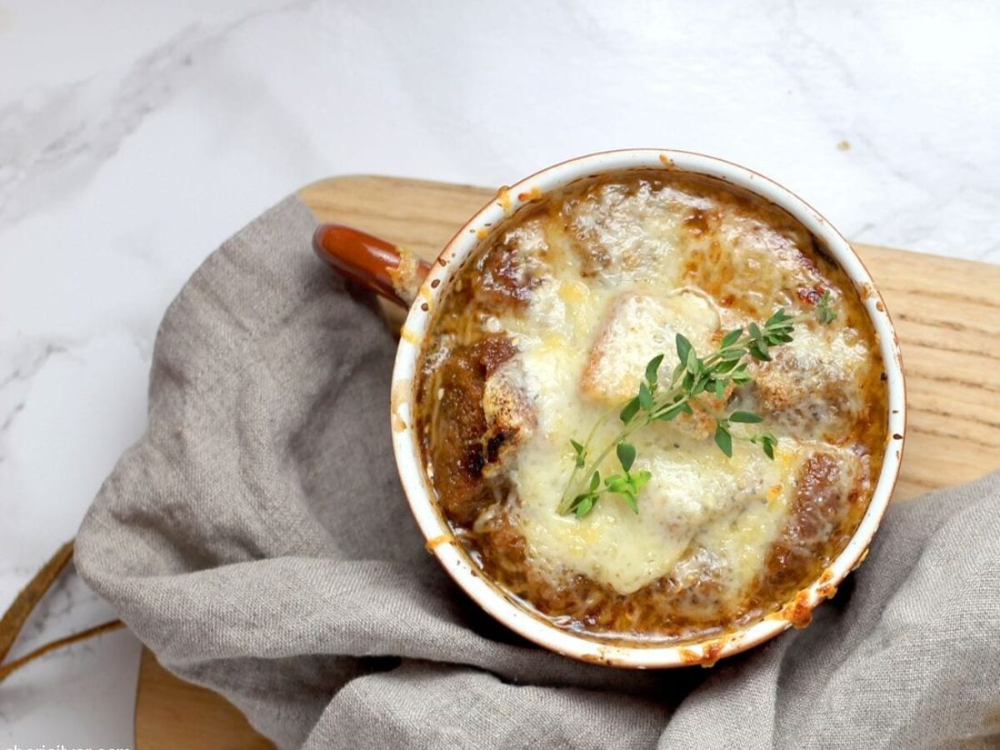
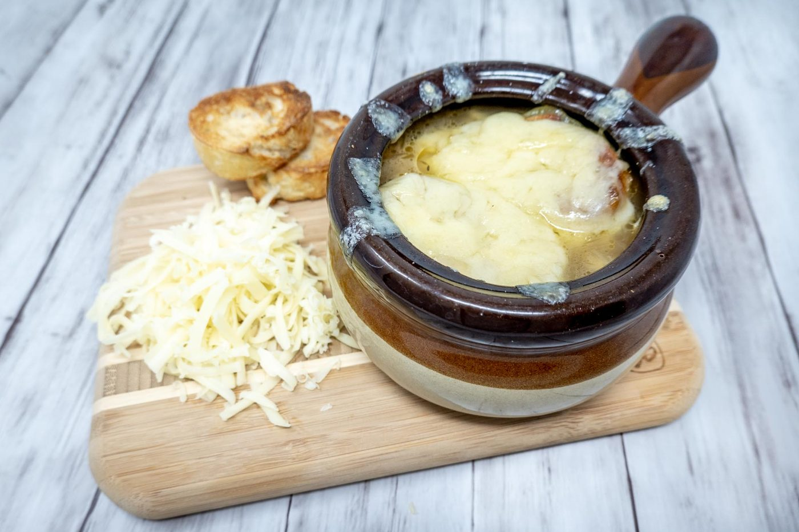
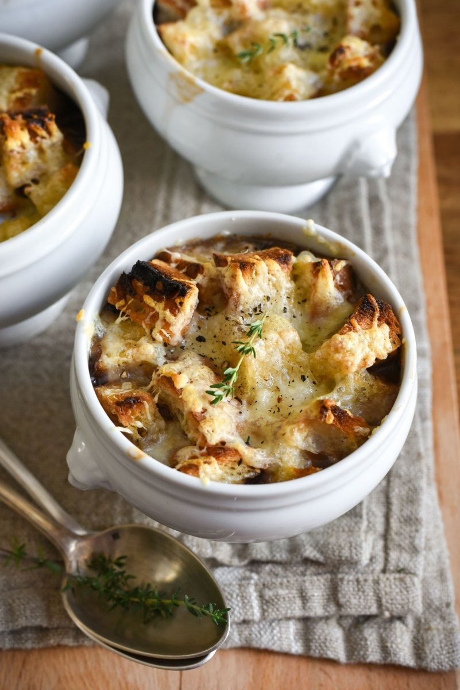

← French Bistro
French Onion Soup
Onions, patience, and a cheese lid that requires commitment and a spoon.
Onions, patience, and a cheese lid that requires commitment and a spoon.
Onion soup was 'poor people's food' for centuries — onions are cheap, keep all winter, and turn into deep, jammy sweetness when you give them an hour of quiet attention. The Parisian version with the crouton and the gratinéed cheese lid made it bistro royalty, but the soul of the dish is still the humblest move in cooking: caramelization.
And there is no rushing it. Forty-five minutes minimum in the pan, letting the onions go from opaque to amber to mahogany, deglazing when the fond darkens. Shortcuts — sugar, faster heat — taste like shortcuts. Do it right and the soup tastes like it simmered for days when it barely made it past lunch.
serves 6 — tick items off as you shop; it saves as you go
Halve and slice the onions pole to pole, 5 mm thick. Melt the butter in your widest heavy pot over medium. Add the onions, salt them, stir to coat. Now stir only every five minutes for the first 20 — sweat, don't fry.
Lower the heat to medium-low and keep going: 40-50 more minutes, scraping the fond and stirring more often as they darken. You are aiming for uniform deep amber-brown, reduced to a third of the volume. If anything catches black, the pot is too hot.
Add the wine and scrape hard — all that sticky brown stuff is flavor. Reduce until nearly dry, then add stock, thyme, bay. Simmer 20 minutes. Taste; season. The soup should taste concentrated and sweet, not salty water.
Ladle into oven-safe bowls set on a tray. Lay toasted baguette slices to cover the surface, bury them under grated gruyère — a proper seal, no gaps.
Under a full broiler or at 220°C / 425°F, 5-8 minutes, until the cheese is blistered and lava-brown at the edges. Serve with the warning that the inside of the cheese is approximately the temperature of the sun.







Images are web-sourced via image search and self-hosted. Original sources:
https://z-cdn.chatglm.cn/image-search-mcp/images-ppt/0c7c71000aa6.jpghttps://z-cdn.chatglm.cn/image-search-mcp/images-ppt/12327602c766.jpghttps://z-cdn.chatglm.cn/image-search-mcp/images-ppt/1c411daf581d.jpghttps://z-cdn.chatglm.cn/image-search-mcp/images-ppt/7e0e4ddaf9ec.jpeghttps://z-cdn.chatglm.cn/image-search-mcp/images-ppt/d3a16918c6d0.jpghttps://z-cdn.chatglm.cn/image-search-mcp/images-ppt/f00dfaadcdd0.jpghttps://z-cdn.chatglm.cn/image-search-mcp/images-ppt/f660bb091ed0.jpgVerified working videos — click a card to load the embed.


Powered by GitHub Issues — the backup kitchen. One issue per recipe; your comment lands in the repo.